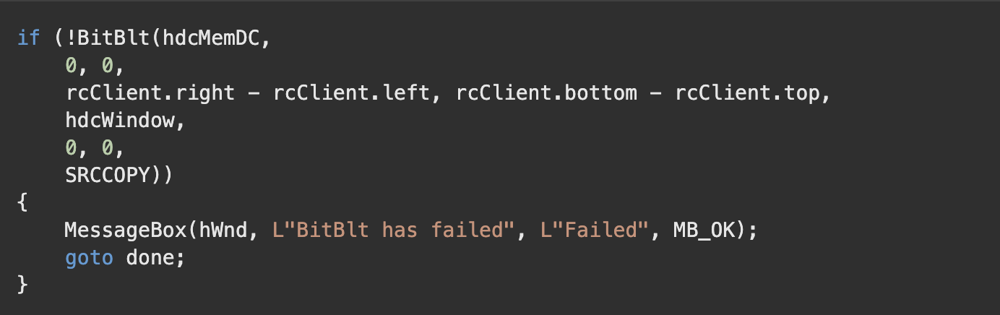

The following list shows some common raster operation codes.
-
BLACKNESS - Fills the destination rectangle using the color associated with index 0 in the physical palette.
(This color is black for the default physical palette.)
-
CAPTUREBLT - Includes any windows that are layered on top of your window in the resulting image. By default,
the image only contains your window. Note that this generally cannot be used for printing device contexts.
- DSTINVERT - Inverts the destination rectangle.
- MERGECOPY - Merges the colors of the source rectangle with the brush currently selected in hdcDest, by using
the Boolean AND operator.
-
MERGEPAINT - Merges the colors of the inverted source rectangle with the colors of the destination rectangle
by using the Boolean OR operator.
- NOMIRRORBITMAP - Prevents the bitmap from being mirrored.
- NOTSRCCOPY - Copies the inverted source rectangle to the destination.
...
Example

Remarks
BitBlt only does clipping on the destination DC.
If a rotation or shear transformation is in effect in the source device context, BitBlt returns an error. If other transformations
exist in the source device context (and a matching transformation is not in effect in the destination device context), the rectangle
in the destination device context is stretched, compressed, or rotated, as necessary.
If the color formats of the source and destination device contexts do not match, the BitBlt function converts the source color
format to match the destination format.
When an enhanced metafile is being recorded, an error occurs if the source device context identifies an enhanced-metafile device
context.
Not all devices support the BitBlt function. For more information, see the RC_BITBLT raster capability entry in the GetDeviceCaps
function as well as the following functions: MaskBlt, PlgBlt, and StretchBlt.
BitBlt returns an error if the source and destination device contexts represent different devices. To transfer data between DCs
for different devices, convert the memory bitmap to a DIB by calling GetDIBits. To display the DIB to the second device,
call SetDIBits or StretchDIBits.
ICM: No color management is performed when blits occur.